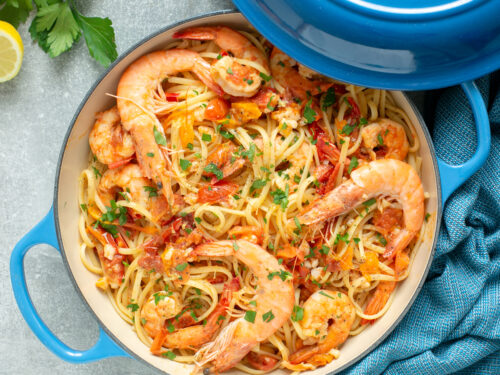

Prawn pasta

Description
Transform this simple pasta dish into a speedy midweek meal by incorporating succulent tiger prawns. In less than 30
minutes, you'll have a delicious and satisfying dish. Plus, it's versatile enough to be easily scaled down or up to
accommodate any number of guests.
Ingredients
- 200g linguine/spaghetti
- 25g butter
- 200g raw peeled prawns (tiger prawns preferred)
- 1 crushed garlic clove
- 100ml white wine
- Squeeze of lemon juice
- Small handful of roughly chopped flat-leaf parsley
Instructions
- Cook the pasta in a large pot of boiling, salted water according to the package instructions.
- In a frying pan, heat a small amount of butter. Once melted and sizzling, add the prawns and cook for about
1
minute until they start to change color.
- Add the crushed garlic and cook for an additional minute.
- Pour in the white wine and bring it to a boil.
- Swirl in the remaining butter, season with salt, pepper, and a squeeze of lemon juice.
- Finally, stir in the chopped parsley.
- When the pasta is cooked to al dente, drain it and combine it with the prawns.
- Divide the pasta and prawns evenly into two bowls, ensuring to pour over any excess sauce.
- Serve the dish immediately.